Chapter 24 Pseudotime analysis
projDir <- params$projDir
dirRel <- params$dirRel
outDirBit <- params$outDirBit
cacheBool <- params$cacheBool
splSetToGet <- params$splSetToGet
setName <- params$setName
setSuf <- params$setSuf
dsiSuf <- params$dsiSuf # 'dsi' for data set integration
if(params$bookType == "mk"){
setName <- "hca"
splSetToGet <- "dummy"
setSuf <- "_5kCellPerSpl"
dsiSuf <- '_dummy'
}
splSetVec <- unlist(strsplit(splSetToGet, ",")) # params may not be read in if knitting book.
splSetToGet2 <- gsub(",", "_", splSetToGet)
nbPcToComp <- 50
figSize <- 7library(SingleCellExperiment)
library(scran)
library(scater)
library(batchelor)
library(cowplot)
library(pheatmap)
library(tidyverse)
library(SingleR)
library(destiny)
library(gam)
library(viridis)
library(msigdbr)
library(clusterProfiler)
library(cellAlign) # https://github.com/shenorrLab/cellAlign
library(Cairo)## Extract T-cells from HCA Dataset {#pseudoTimeExtractTCell}
In this section, we are starting our analysis with normalized HCA data and perform integration, clustering and dimensionality reduction. Our aim is to extract T-cells from this dataset and proceed with pseudotime analysis in the next section.
We are going to work with HCA data. This data set has been pre-processed and normalized before.
#sce<-readRDS(file="~/Course_Materials/scRNAseq/pseudotime/hca_sce.bone.RDS")
tmpFn <- sprintf("%s/%s/Robjects/%s_sce_nz_postDeconv%s.Rds",
projDir, outDirBit, setName, setSuf)
print(tmpFn)## [1] "/ssd/personal/baller01/20200511_FernandesM_ME_crukBiSs2020/AnaWiSce/AnaKmWiC/Robjects/hca_sce_nz_postDeconv_5kCellPerSpl.Rds"We use symbols in place of ENSEMBL IDs for easier interpretation later.
# BiocManager::install("EnsDb.Hsapiens.v86")
#rowData(sce)$Chr <- mapIds(EnsDb.Hsapiens.v86, keys=rownames(sce), column="SEQNAME", keytype="GENEID")
rownames(sce) <- uniquifyFeatureNames(rowData(sce)$ensembl_gene_id, names = rowData(sce)$Symbol)24.0.1 Variance modeling
We block on the donor of origin to mitigate batch effects during highly variable gene (HVG) selection. We select a larger number of HVGs to capture any batch-specific variation that might be present.
24.0.2 Data integration
The batchelor package provides an implementation of the Mutual Nearest Neighbours (MNN) approach via the fastMNN() function. We apply it to our HCA data to remove the donor specific effects across the highly variable genes in top.hca. To reduce computational work and technical noise, all cells in all samples are projected into the low-dimensional space defined by the top d principal components. Identification of MNNs and calculation of correction vectors are then performed in this low-dimensional space.
The corrected matrix in the reducedDims() contains the low-dimensional corrected coordinates for all cells, which we will use in place of the PCs in our downstream analyses. We store it in ‘MNN’ slot in the main sce object.
24.0.3 Dimensionality Reduction
We cluster on the low-dimensional corrected coordinates to obtain a partitioning of the cells that serves as a proxy for the population structure. If the batch effect is successfully corrected, clusters corresponding to shared cell types or states should contain cells from multiple samples. We see that all clusters contain contributions from each sample after correction.
set.seed(01010100)
sce <- runPCA(sce, dimred="MNN")
sce <- runUMAP(sce, dimred="MNN")
sce <- runTSNE(sce, dimred="MNN")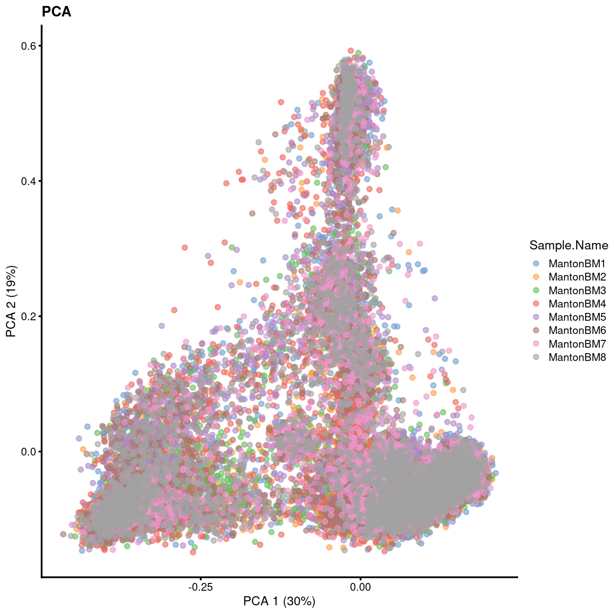
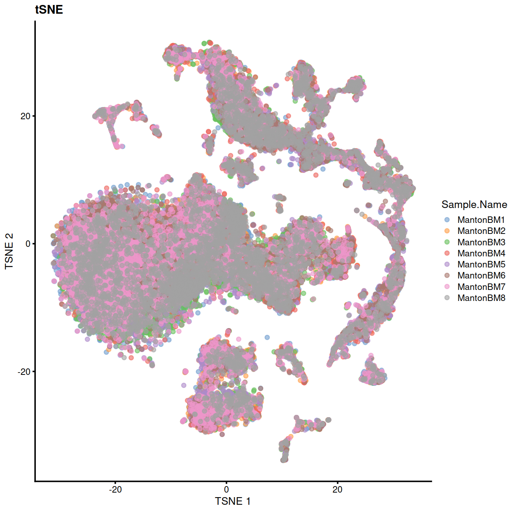
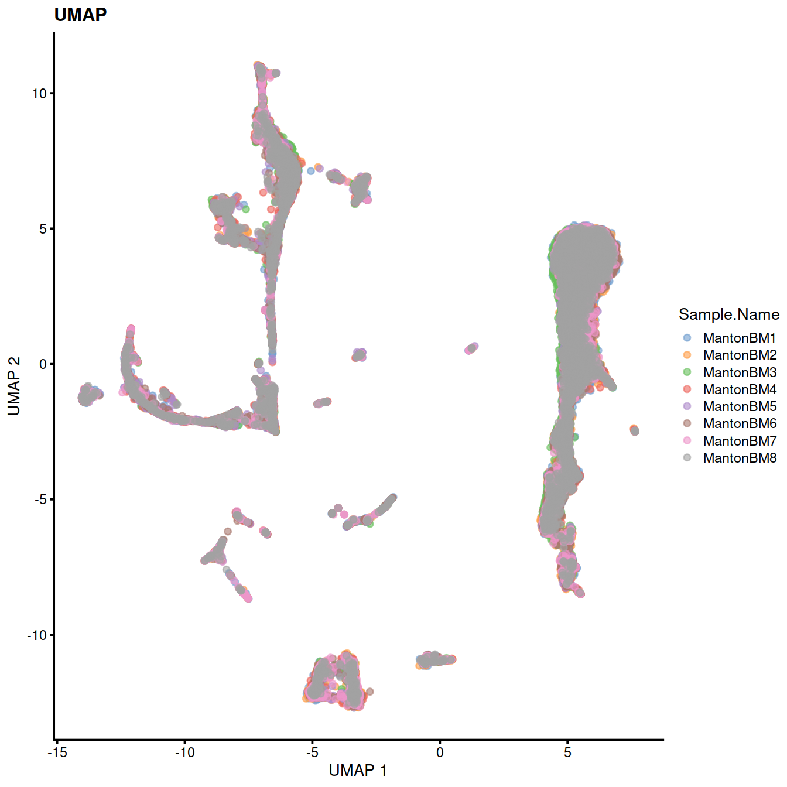
24.0.4 Clustering
Graph-based clustering generates an excessively large intermediate graph so we will instead use a two-step approach with k-means. We generate 1000 small clusters that are subsequently aggregated into more interpretable groups with a graph-based method.
set.seed(1000)
clust.hca <- clusterSNNGraph(sce,
use.dimred="MNN",
use.kmeans=TRUE,
kmeans.centers=1000)
colLabels(sce) <- factor(clust.hca)
table(colLabels(sce))##
## 1 2 3 4 5 6 7 8 9 10 11
## 4471 6365 2911 4420 2402 12536 1176 3566 1146 596 411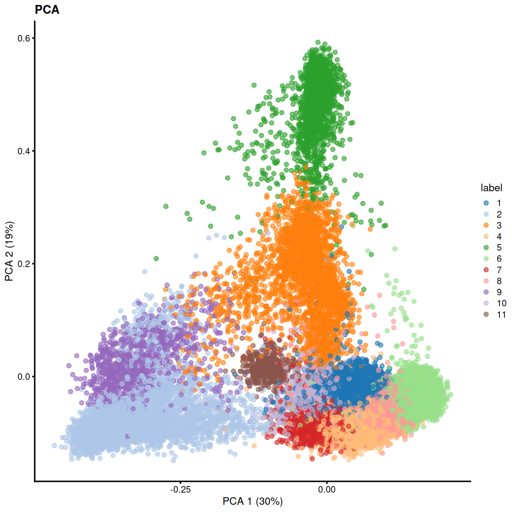
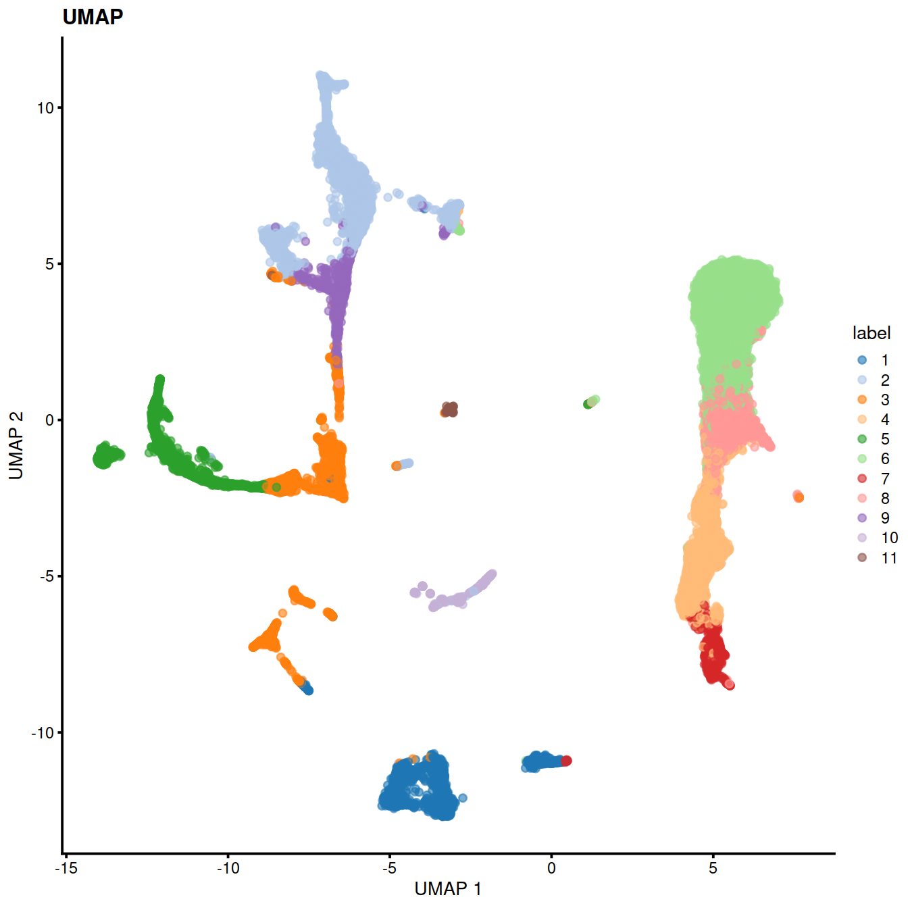
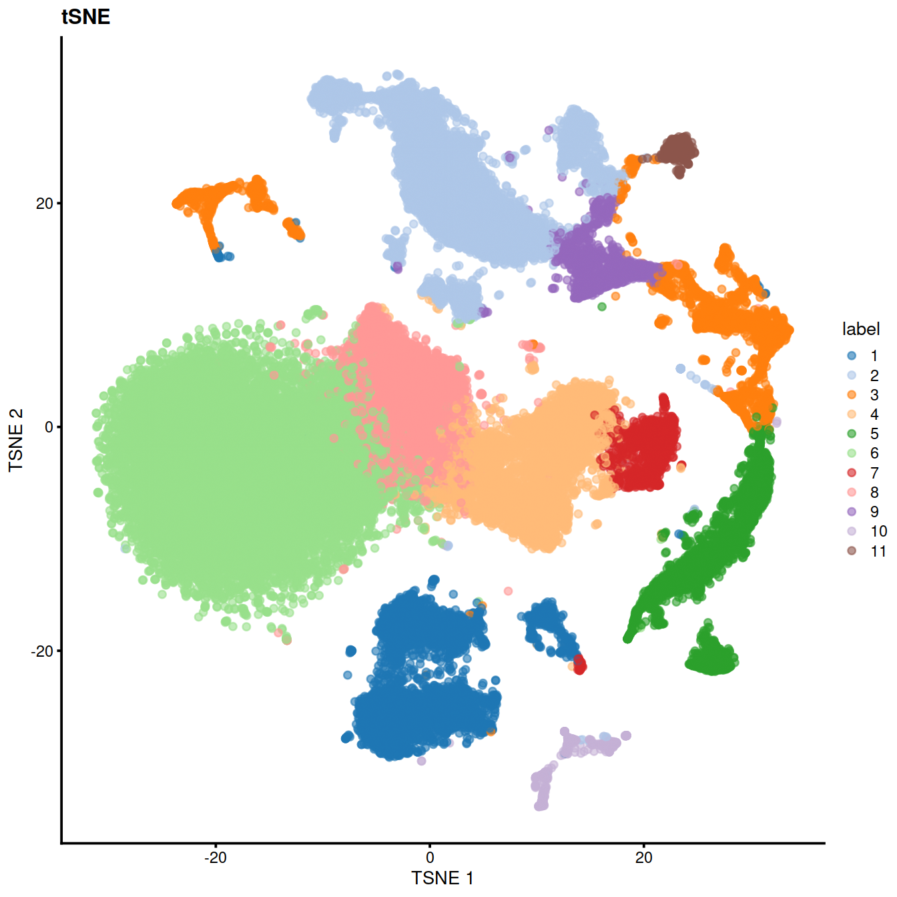
24.0.5 Cell type classification
We perform automated cell type classification using a reference dataset to annotate each cluster based on its pseudo-bulk profile. This is for a quick assignment of cluster identity. We are going to use Human Primary Cell Atlas (HPCA) data for that. HumanPrimaryCellAtlasData function provides normalized expression values for 713 microarray samples from HPCA (Mabbott et al., 2013).
These 713 samples were processed and normalized as described in Aran, Looney and Liu et al. (2019).
Each sample has been assigned to one of 37 main cell types and 157 subtypes.
se.aggregated <- sumCountsAcrossCells(sce, id=colLabels(sce))
hpc <- celldex::HumanPrimaryCellAtlasData()
anno.hca <- SingleR(se.aggregated, ref = hpc, labels = hpc$label.main, assay.type.test="sum")
anno.hca## DataFrame with 11 rows and 5 columns
## scores first.labels tuning.scores
## <matrix> <character> <DataFrame>
## 1 0.270340:0.754119:0.611547:... B_cell 0.754119: 0.6997738
## 2 0.275371:0.598736:0.693408:... Pre-B_cell_CD34- 0.509690: 0.0634099
## 3 0.364176:0.613523:0.692287:... CMP 0.594369: 0.3957973
## 4 0.282579:0.620968:0.575578:... NK_cell 0.584395: 0.4455476
## 5 0.381883:0.558646:0.649733:... MEP 0.361367: 0.3372588
## 6 0.291896:0.637409:0.575667:... T_cells 0.773909: 0.7208437
## 7 0.272533:0.650300:0.600539:... NK_cell 0.805271: 0.7248806
## 8 0.296865:0.637337:0.590623:... T_cells 0.689381:-0.0530141
## 9 0.315724:0.599837:0.722784:... Pre-B_cell_CD34- 0.475323: 0.3332805
## 10 0.321822:0.686603:0.592921:... B_cell 0.488044: 0.2851121
## 11 0.293917:0.635528:0.597594:... Pre-B_cell_CD34- 0.245206: 0.2048503
## labels pruned.labels
## <character> <character>
## 1 B_cell B_cell
## 2 Monocyte Monocyte
## 3 CMP CMP
## 4 T_cells T_cells
## 5 BM & Prog. BM & Prog.
## 6 T_cells T_cells
## 7 NK_cell NK_cell
## 8 T_cells T_cells
## 9 Pre-B_cell_CD34- Pre-B_cell_CD34-
## 10 B_cell B_cell
## 11 Pre-B_cell_CD34- Pre-B_cell_CD34-tab <- table(anno.hca$labels, colnames(se.aggregated))
# Adding a pseudo-count of 10 to avoid strong color jumps with just 1 cell.
pheatmap(log10(tab+10))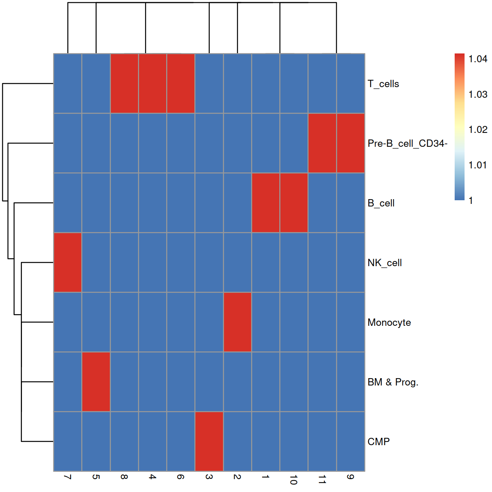
sce$cell_type<-recode(sce$label,
"1" = "T_cells",
"2" = "Monocyte",
"3"="B_cell",
"4"="MEP",
"5"="B_cell",
"6"="CMP",
"7"="T_cells",
"8"="Monocyte",
"9"="T_cells",
"10"="Pro-B_cell_CD34+",
"11"="NK_cell",
"12"="B_cell")#level_key <- anno.hca %>%
# data.frame() %>%
# rownames_to_column("clu") %>%
# #select(clu, labels)
# pull(labels)
level_key <- anno.hca$labels
names(level_key) <- row.names(anno.hca)
sce$cell_type <- recode(sce$label, !!!level_key)We can now use the predicted cell types to color PCA, UMAP and tSNE.
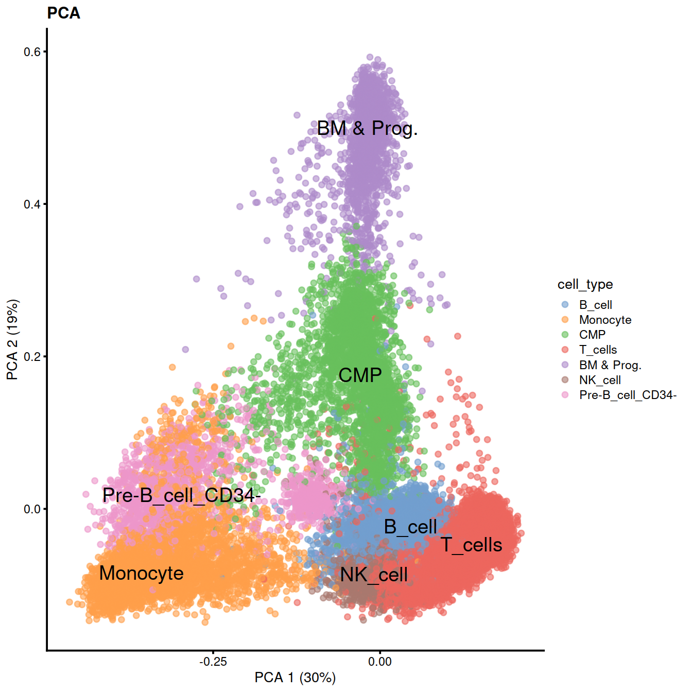
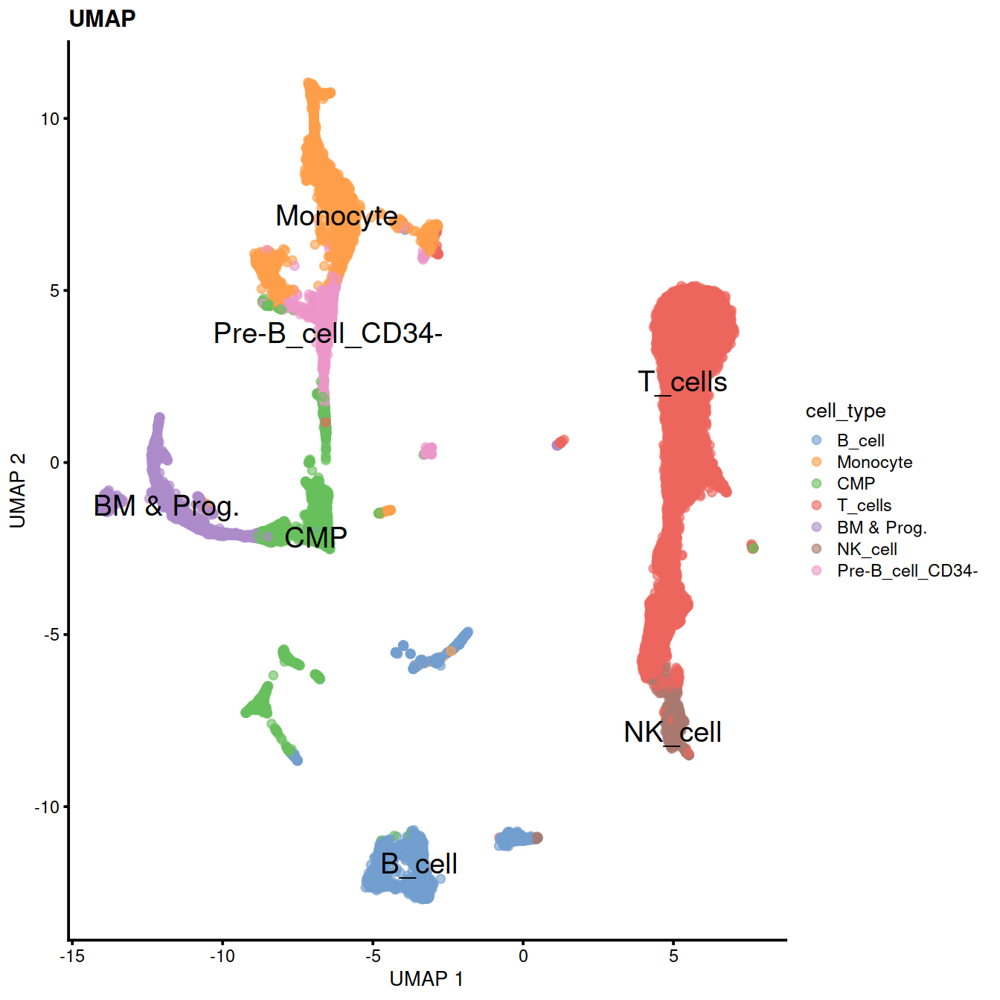
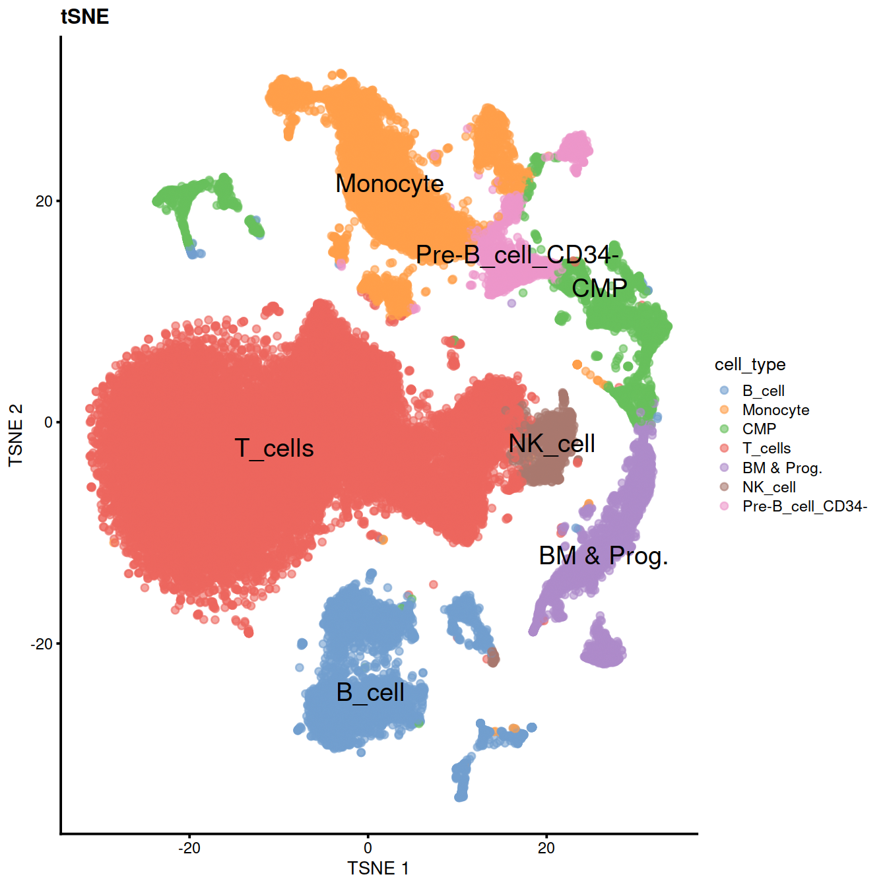
We can also check expression of some marker genes.
CD3D and TRAC are used as marker genes for T-cells Szabo et al. 2019.
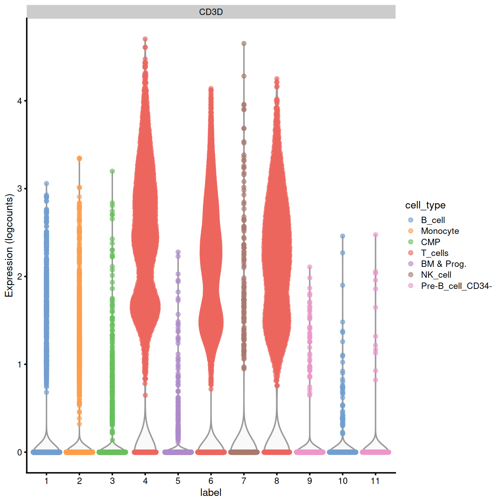
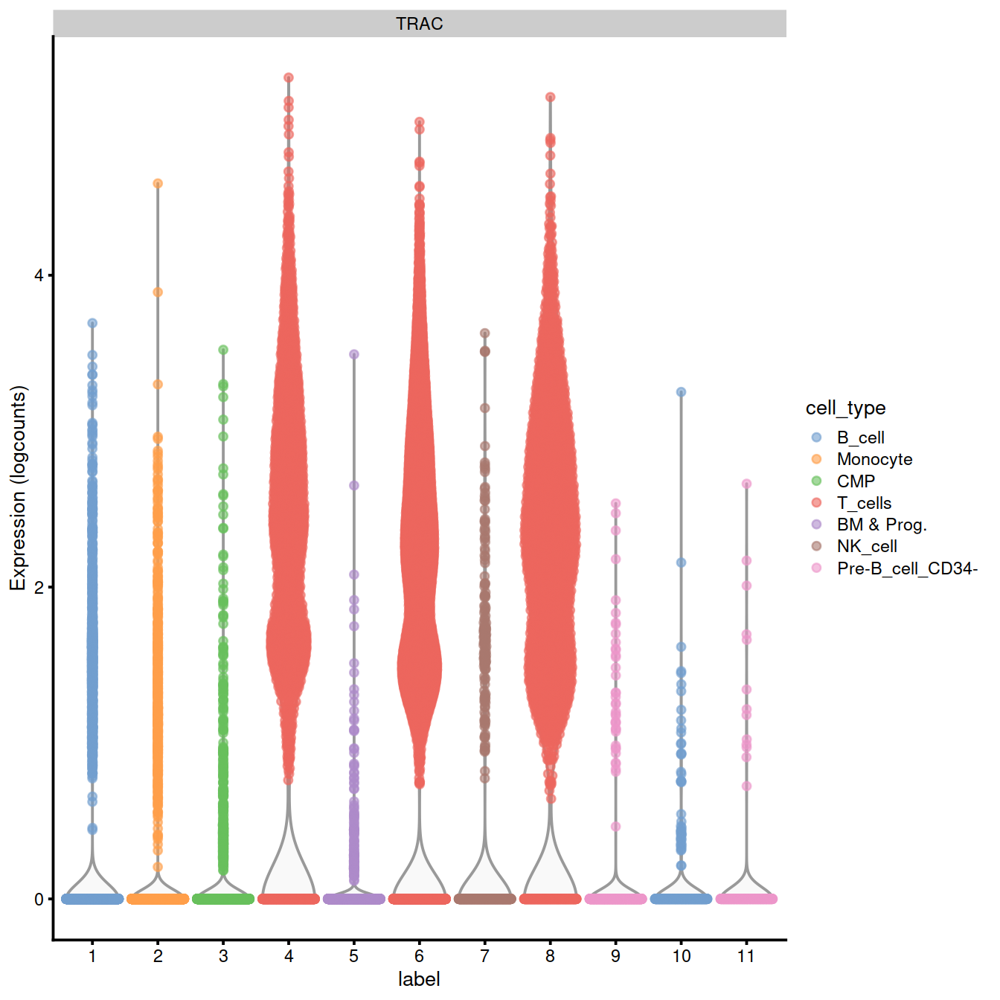
24.0.6 Extract T-cells
We will now extract T-cells and store in a new SCE object to use in pseudotime analysis.
Pull barcodes for T-cells
tcell.bc <- colData(sce) %>%
data.frame() %>%
group_by(cell_type) %>%
dplyr::filter(cell_type == "T_cells") %>%
pull(Barcode)
table(colData(sce)$Barcode %in% tcell.bc)##
## FALSE TRUE
## 19478 20522Create a new SingleCellExperiment object for T-cells
#saveRDS(sce.tcell,"~/Course_Materials/scRNAseq/pseudotime/sce.tcell.RDS")
tmpFn <- sprintf("%s/%s/Robjects/%s_sce_nz_postDeconv%s_tcell.Rds",
projDir, outDirBit, setName, setSuf)
print(tmpFn)## [1] "/ssd/personal/baller01/20200511_FernandesM_ME_crukBiSs2020/AnaWiSce/AnaKmWiC/Robjects/hca_sce_nz_postDeconv_5kCellPerSpl_tcell.Rds"24.1 Setting up the data
In many situations, one is studying a process where cells change continuously. This includes, for example, many differentiation processes taking place during development: following a stimulus, cells will change from one cell-type to another. Ideally, we would like to monitor the expression levels of an individual cell over time. Unfortunately, such monitoring is not possible with scRNA-seq since the cell is lysed (destroyed) when the RNA is extracted.
Instead, we must sample at multiple time-points and obtain snapshots of the gene expression profiles. Since some of the cells will proceed faster along the differentiation than others, each snapshot may contain cells at varying points along the developmental progression. We use statistical methods to order the cells along one or more trajectories which represent the underlying developmental trajectories, this ordering is referred to as “pseudotime”.
A recent benchmarking paper by Saelens et al provides a detailed summary of the various computational methods for trajectory inference from single-cell transcriptomics. They discuss 45 tools and evaluate them across various aspects including accuracy, scalability, and usability. They provide dynverse, an open set of packages to benchmark, construct and interpret single-cell trajectories (currently they have a uniform interface for 60 methods). We load the SCE object we have generated previously. This object contains only the T-cells from 8 healthy donors. We will first prepare the data by identifying variable genes, integrating the data across donors and calculating principal components.
tmpFn <- sprintf("%s/%s/Robjects/%s_sce_nz_postDeconv%s_tcell.Rds",
projDir, outDirBit, setName, setSuf)
sce.tcell <- readRDS(file=tmpFn)
sce.tcell## class: SingleCellExperiment
## dim: 20425 20522
## metadata(0):
## assays(2): counts logcounts
## rownames(20425): AL627309.1 AL669831.5 ... AC233755.1 AC240274.1
## rowData names(11): ensembl_gene_id external_gene_name ... detected
## gene_sparsity
## colnames: NULL
## colData names(19): Sample Barcode ... label cell_type
## reducedDimNames(4): MNN PCA UMAP TSNE
## altExpNames(0):dec.tcell <- modelGeneVar(sce.tcell, block=sce.tcell$Sample.Name)
top.tcell <- getTopHVGs(dec.tcell, n=5000)set.seed(1010001)
merged.tcell <- fastMNN(sce.tcell, batch = sce.tcell$Sample.Name, subset.row = top.tcell)
reducedDim(sce.tcell, 'MNN') <- reducedDim(merged.tcell, 'corrected')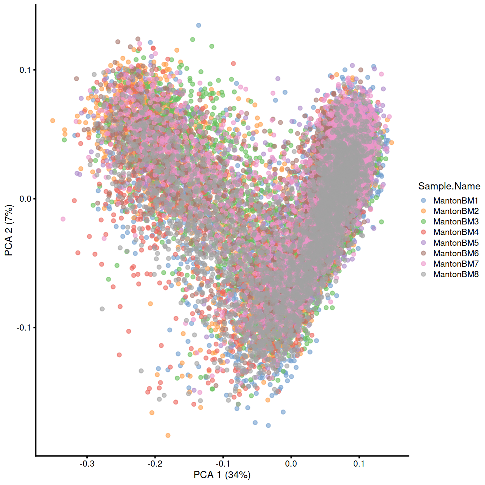
24.1.1 Trajectory inference with destiny
Diffusion maps were introduced by Ronald Coifman and Stephane Lafon, and the underlying idea is to assume that the data are samples from a diffusion process. The method infers the low-dimensional manifold by estimating the eigenvalues and eigenvectors for the diffusion operator related to the data. Angerer et al have applied the diffusion maps concept to the analysis of single-cell RNA-seq data to create an R package called destiny.
For ease of computation, we will perform pseudotime analysis only on one sample, and we will downsample the object to 1000 cells. We will select the sample named MantonBM1.
# pull the barcodes for MantonBM1 sample & and downsample the set to 1000 genes
vec.bc <- colData(sce.tcell) %>%
data.frame() %>%
filter(Sample.Name == "MantonBM1") %>%
group_by(Sample.Name) %>%
sample_n(1000) %>%
pull(Barcode)Number of cells in the sample:
##
## FALSE TRUE
## 19522 1000Subset cells from the main SCE object:
tmpInd <- which(colData(sce.tcell)$Barcode %in% vec.bc)
sce.tcell.BM1 <- sce.tcell[,tmpInd]
sce.tcell.BM1## class: SingleCellExperiment
## dim: 20425 1000
## metadata(0):
## assays(2): counts logcounts
## rownames(20425): AL627309.1 AL669831.5 ... AC233755.1 AC240274.1
## rowData names(11): ensembl_gene_id external_gene_name ... detected
## gene_sparsity
## colnames: NULL
## colData names(19): Sample Barcode ... label cell_type
## reducedDimNames(4): MNN PCA UMAP TSNE
## altExpNames(0):Identify top 500 highly variable genes
We will extract normalized counts for HVG to use in pseudotime alignment
tcell.BM1_counts <- logcounts(sce.tcell.BM1)
tcell.BM1_counts <- t(as.matrix(tcell.BM1_counts[top.tcell.BM1,]))
cellLabels <- sce.tcell.BM1$Barcode
rownames(tcell.BM1_counts) <- cellLabels## CCL5 NKG7 S100A4 KLRB1
## AAACCTGAGCAGCGTA-13 3.733773 1.609114 2.838333 0
## AAACCTGAGCGATATA-13 0.000000 0.000000 3.889855 0
## AAACCTGGTAATCACC-13 0.000000 0.000000 3.576974 0
## AAACCTGGTACAGTTC-13 3.337079 1.712109 3.630169 0And finally, we can run pseudotime alignment with destiny
Plot diffusion component 1 vs diffusion component 2 (DC1 vs DC2).
tmp <- data.frame(DC1 = eigenvectors(dm_tcell_BM1)[, 1],
DC2 = eigenvectors(dm_tcell_BM1)[, 2])
ggplot(tmp, aes(x = DC1, y = DC2)) +
geom_point() +
xlab("Diffusion component 1") +
ylab("Diffusion component 2") +
theme_classic()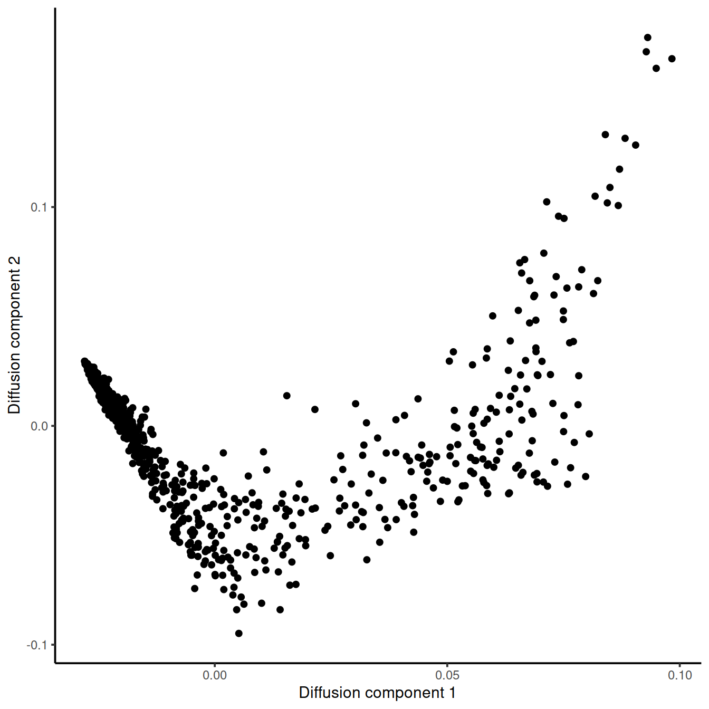
Stash diffusion components to SCE object
24.1.2 Find temporally expressed genes
After running destiny, an interesting next step may be to find genes that change their expression over the course of time We demonstrate one possible method for this type of analysis on the 500 most variable genes. We will regress each gene on the pseudotime variable we have generated, using a general additive model (GAM). This allows us to detect non-linear patterns in gene expression. We are going to use HVG we identified in the previous step, but this analysis can also be done using the whole transcriptome.
# Only look at the 500 most variable genes when identifying temporally expressesd genes.
# Identify the variable genes by ranking all genes by their variance.
# We will use the first diffusion components as a measure of pseudotime
Y<-log2(counts(sce.tcell.BM1)+1)
colnames(Y)<-cellLabels
Y<-Y[top.tcell.BM1,]
# Fit GAM for each gene using pseudotime as independent variable.
t <- eigenvectors(dm_tcell_BM1)[, 1]
gam.pval <- apply(Y, 1, function(z){
d <- data.frame(z=z, t=t)
tmp <- gam(z ~ lo(t), data=d)
p <- summary(tmp)[4][[1]][1,5]
p
})Select top 30 genes for visualization
# Identify genes with the most significant time-dependent model fit.
topgenes <- names(sort(gam.pval, decreasing = FALSE))[1:30] Visualize these genes in a heatmap
heatmapdata <- Y[topgenes,]
heatmapdata <- heatmapdata[,order(t, na.last = NA)]
t_ann<-as.data.frame(t)
colnames(t_ann)<-"pseudotime"
pheatmap(heatmapdata, cluster_rows = T, cluster_cols = F, color = plasma(200), show_colnames = F, annotation_col = t_ann)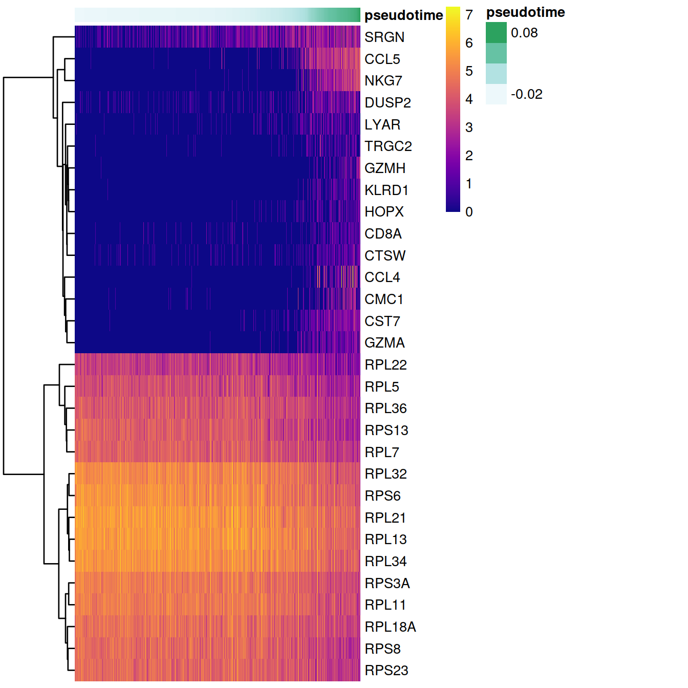
Visualize how some of the temporally expressed genes change in time
Following individual genes is very helpful for identifying genes that play an important role in the differentiation process. We illustrate the procedure using the GZMA gene. We have added the pseudotime values computed with destiny to the colData slot of the SCE object. Having done that, the full plotting capabilities of the scater package can be used to investigate relationships between gene expression, cell populations and pseudotime.
plotExpression(sce.tcell.BM1,
"GZMA",
x = "pseudotime_destiny_1",
show_violin = TRUE,
show_smooth = TRUE)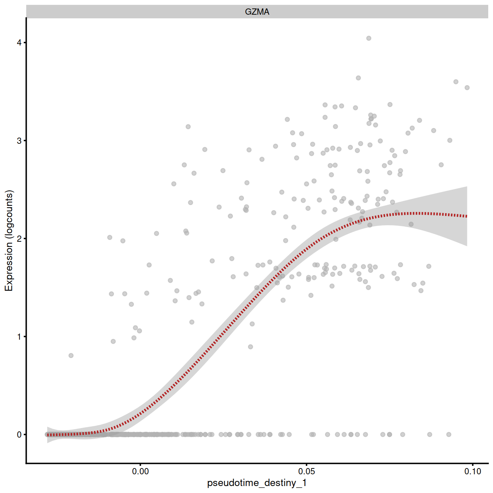
24.1.3 Pseudotime analysis for another HCA sample
# pull barcodes for MantonBM2
vec.bc <- colData(sce.tcell) %>%
data.frame() %>%
filter(Sample.Name == "MantonBM2") %>%
group_by(Sample.Name) %>%
sample_n(1000) %>%
pull(Barcode)
# create another object for MantonBM2
tmpInd <- which(colData(sce.tcell)$Barcode %in% vec.bc)
sce.tcell.BM2 <- sce.tcell[,tmpInd]
# Identift HVG
dec.tcell.BM2 <- modelGeneVar(sce.tcell.BM2)
top.tcell.BM2 <- getTopHVGs(dec.tcell.BM2, n=500)
# extract normalized count data for HVG
tcell.BM2_counts<-logcounts(sce.tcell.BM2)
tcell.BM2_counts<-t(as.matrix(tcell.BM2_counts[top.tcell.BM2,]))
cellLabels <- sce.tcell.BM2$Barcode
rownames(tcell.BM2_counts) <- cellLabels
dm_tcell_BM2 <- DiffusionMap(tcell.BM2_counts,n_pcs = 50)
tmp <- data.frame(DC1 = eigenvectors(dm_tcell_BM2)[, 1],
DC2 = eigenvectors(dm_tcell_BM2)[, 2])
ggplot(tmp, aes(x = DC1, y = DC2)) +
geom_point() +
xlab("Diffusion component 1") +
ylab("Diffusion component 2") +
theme_classic()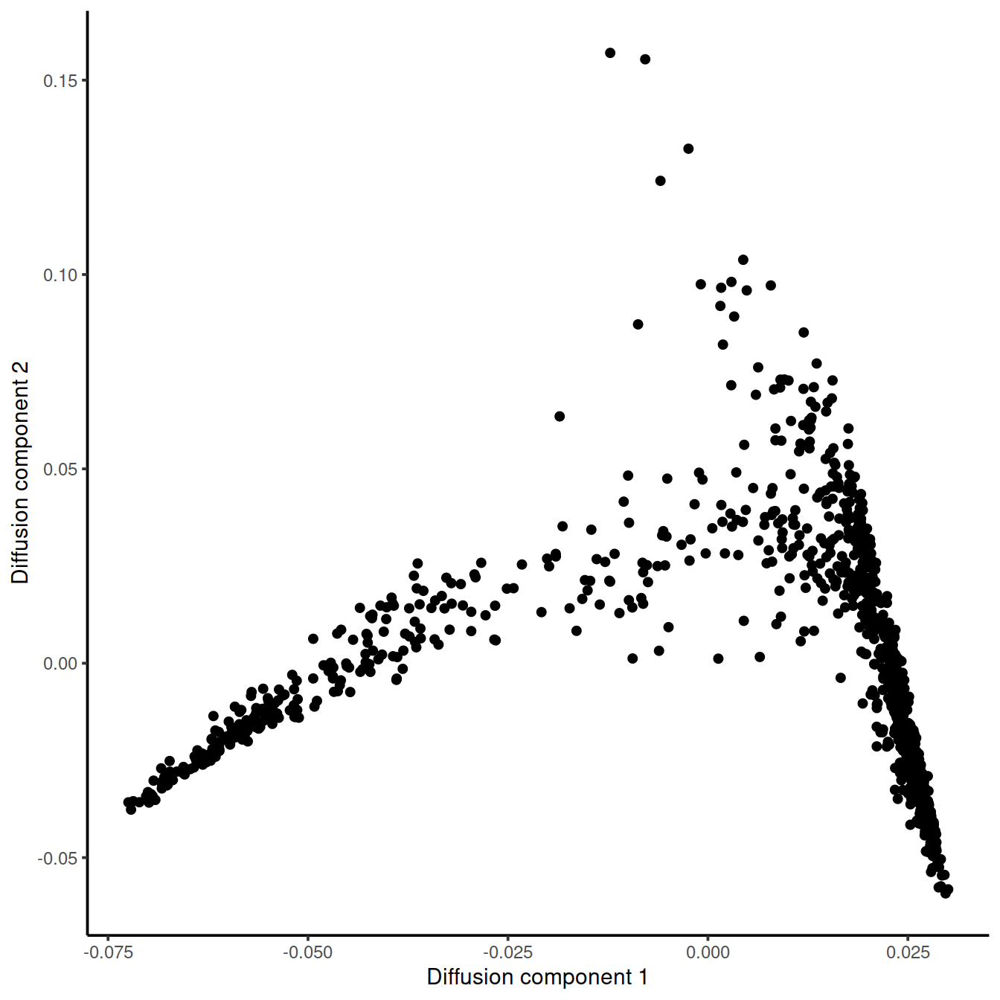
24.1.4 Exercise 1
Obtain pseudotime for one of the Caron samples.
#sce.PRET1<-readRDS("~/Course_Materials/scRNAseq/pseudotime/sce_caron_PRET1.RDS")
setName <- "caron"
setSuf <- "_allCells"
#tmpFn <- sprintf("%s/%s/Robjects/%s_sce_nz_postQc%s.Rds", # no norm counts yet
tmpFn <- sprintf("%s/%s/Robjects/%s_sce_nz_postDeconv%s.Rds",
projDir, outDirBit, setName, setSuf)
x <- readRDS(tmpFn)
spl.x <- colData(x) %>%
data.frame() %>%
filter(source_name == "PRE-T") %>%
pull(Sample.Name) %>%
unique() %>% head(1)We will use GSM3872440:
# downsample by randomly choosing 1000 cells:
vec.bc <- colData(x) %>%
data.frame() %>%
filter(Sample.Name == spl.x) %>%
group_by(Sample.Name) %>%
sample_n(1000) %>%
pull(Barcode)Number of cells in the sample:
##
## FALSE TRUE
## 46830 1000Subset cells from the main SCE object:
tmpInd <- which(colData(x)$Barcode %in% vec.bc)
sce.PRET1 <- x[,tmpInd]
rownames(sce.PRET1) <- uniquifyFeatureNames(rowData(sce.PRET1)$ensembl_gene_id,
names = rowData(sce.PRET1)$Symbol)
sce.PRET1## class: SingleCellExperiment
## dim: 18431 1000
## metadata(0):
## assays(2): counts logcounts
## rownames(18431): AL627309.1 AL669831.5 ... AC233755.1 AC240274.1
## rowData names(11): ensembl_gene_id external_gene_name ... detected
## gene_sparsity
## colnames: NULL
## colData names(17): Sample Barcode ... cell_sparsity sizeFactor
## reducedDimNames(0):
## altExpNames(0):You need to perform: * variance remodelling * HVG identification * extract normalized counts * run destiny * visualize diffusion components
# Identify HVG
dec.caron.PRET1 <- modelGeneVar(sce.PRET1)
top.caron.PRET1 <- getTopHVGs(dec.caron.PRET1, n=500)
# extract normalized count data for HVG
caron.PRET1_counts <- logcounts(sce.PRET1)
caron.PRET1_counts <- t(as.matrix(caron.PRET1_counts[top.caron.PRET1,]))
cellLabels <- sce.PRET1$Barcode
rownames(caron.PRET1_counts) <- cellLabels
dm_caron.PRET1 <- DiffusionMap(caron.PRET1_counts,n_pcs = 50)
tmp <- data.frame(DC1 = eigenvectors(dm_caron.PRET1)[, 1],
DC2 = eigenvectors(dm_caron.PRET1)[, 2])
ggplot(tmp, aes(x = DC1, y = DC2)) +
geom_point() +
xlab("Diffusion component 1") +
ylab("Diffusion component 2") +
theme_classic()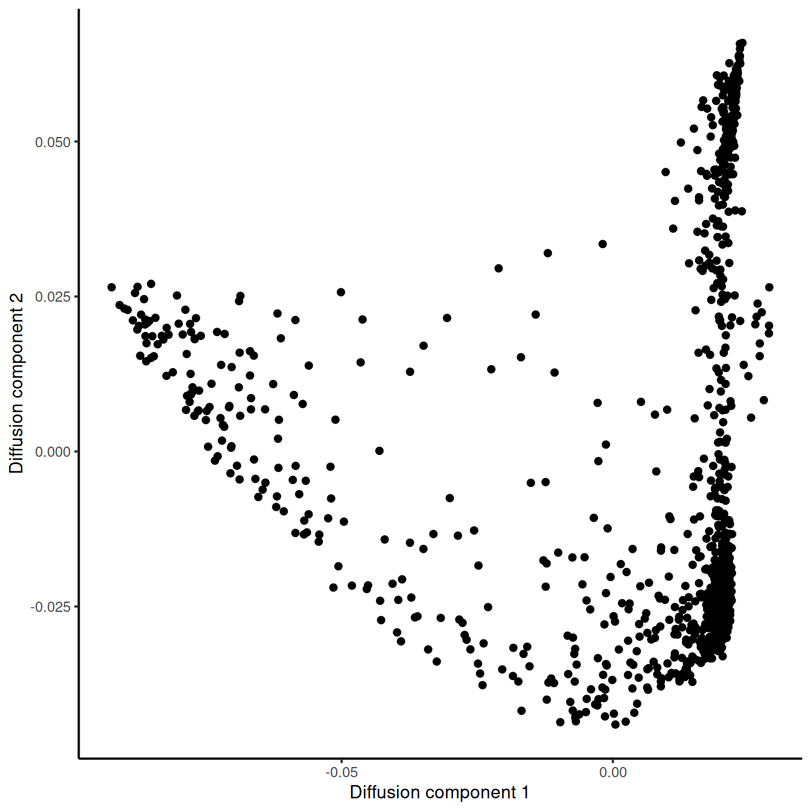
Y <- log2(counts(sce.PRET1)+1)
colnames(Y) <- cellLabels
Y <- Y[top.caron.PRET1,]
# Fit GAM for each gene using pseudotime as independent variable.
t <- eigenvectors(dm_caron.PRET1)[, 1]
gam.pval <- apply(Y, 1, function(z){
d <- data.frame(z=z, t=t)
tmp <- gam(z ~ lo(t), data=d)
p <- summary(tmp)[4][[1]][1,5]
p
})Select top 30 genes for visualization
# Identify genes with the most significant time-dependent model fit.
topgenes <- names(sort(gam.pval, decreasing = FALSE))[1:30] Visualize these genes in a heatmap
heatmapdata <- Y[topgenes,]
heatmapdata <- heatmapdata[,order(t, na.last = NA)]
t_ann<-as.data.frame(t)
colnames(t_ann)<-"pseudotime"
pheatmap(heatmapdata, cluster_rows = T, cluster_cols = F, color = plasma(200), show_colnames = F, annotation_col = t_ann)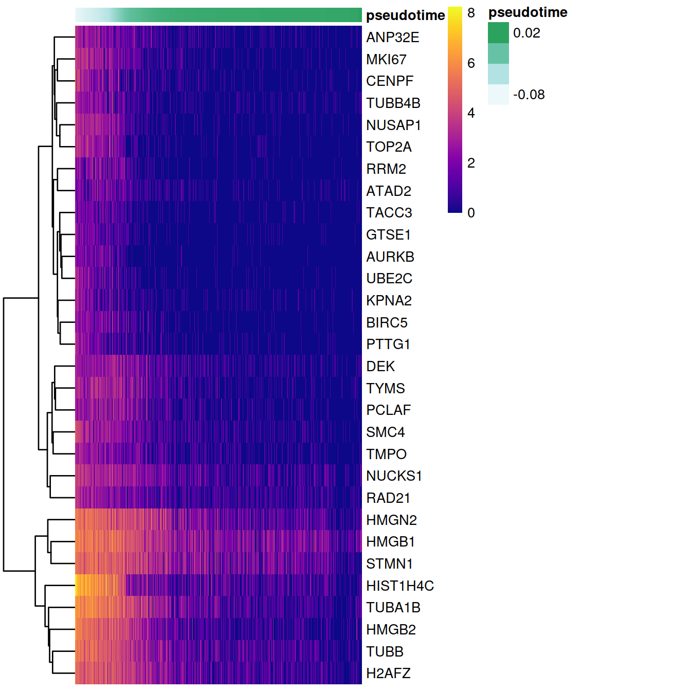
What kind of a dynamic process might be taking place in this cancer cell?
We can quickly check in which pathways these top genes are enriched using MSigDB.
Molecular Signatures Database contains 8 major collections:
- H: hallmark gene sets
- C1: positional gene sets
- C2: curated gene sets
- C3: motif gene sets
- C4: computational gene sets
- C5: GO gene sets
- C6: oncogenic signatures
- C7: immunologic signatures
We are going to use hallmark gene sets (H) and perform a hypergeometric test with our top 30 genes for all HALLMARK sets.
msigdb_hallmark <- msigdbr(species = "Homo sapiens",
category = "H") %>%
dplyr::select(gs_name, gene_symbol)
em <- enricher(topgenes,
TERM2GENE = msigdb_hallmark)
head(em)[,"qvalue",drop=F]## qvalue
## HALLMARK_E2F_TARGETS 1.497108e-18
## HALLMARK_G2M_CHECKPOINT 2.503524e-15
## HALLMARK_MITOTIC_SPINDLE 7.203216e-03Let’s also check the ‘oncogenic signatures’ gene sets (C6) and perform a hypergeometric test with our top 30 genes for all these gene sets.
msigdb_c6 <- msigdbr(species = "Homo sapiens",
category = "C6") %>%
dplyr::select(gs_name, gene_symbol)
em <- enricher(topgenes,
TERM2GENE = msigdb_c6)
head(em)[,"qvalue",drop=F]## qvalue
## CORDENONSI_YAP_CONSERVED_SIGNATURE 0.0000514776
## GCNP_SHH_UP_LATE.V1_UP 0.0001203704
## RB_P107_DN.V1_UP 0.0004552384
## CSR_LATE_UP.V1_UP 0.0008812455
## VEGF_A_UP.V1_DN 0.0012567178
## RB_P130_DN.V1_UP 0.0047769824Let’s write to file for future use the normalised counts for the highly variables genes:
setName <- "hca"
setSuf <- "_5kCellPerSpl"
# BM1
tmpFn <- sprintf("%s/%s/Robjects/%s_sce_nz_postDeconv%s_%s.Rds",
projDir, outDirBit, setName, setSuf, "MantonBM1")
saveRDS(tcell.BM1_counts, file=tmpFn)
# BM2
tmpFn <- sprintf("%s/%s/Robjects/%s_sce_nz_postDeconv%s_%s.Rds",
projDir, outDirBit, setName, setSuf, "MantonBM2")
saveRDS(tcell.BM2_counts, file=tmpFn)
# PRE-T 1
setName <- "caron"
setSuf <- "_allCells"
tmpFn <- sprintf("%s/%s/Robjects/%s_sce_nz_postDeconv%s_%s.Rds",
projDir, outDirBit, setName, setSuf, spl.x)
saveRDS(caron.PRET1_counts, file=tmpFn)24.2 Pseudotime Alignment
CellAlign is a tool for quantitative comparison of expression dynamics within or between single-cell trajectories. The input to the CellAlign workflow is any trajectory vector that orders single cell expression with a pseudo-time spacing and the expression matrix for the cells used to define the trajectory. cellAlign has 3 essential steps:
Interpolate the data to have N evenly spaced points along the scaled pseudotime vector using a sliding window of Gaussian weights
Determine the genes of interest for alignment
Align your trajectory among the selected genes either along the whole trajectory or along a partial segment.
The first step is to interpolate the data along the trajectory to represent the data by N (default 200) equally spaced points along the pseudotime trajectory. We included this step because single-cell measurements are often sparse or heterogeneous along the trajectory, leaving gaps that cannot be aligned. Cell-Align interpolates the gene-expression values of equally spaced artificial points using the real single-cell expression data. The expression values of the interpolated points are calculated using all cells, with each single cell assigned a weight given by a Gaussian distribution centered at the interpolated point and a width assigned by a parameter called winSz. The default winSz is 0.1, as this is the range that preserves the dynamics of the trajectory without including excessive noise for standard single cell data sets.
We will use the samples analysed in the previous session: two ABMMC and one PRE-T:
# HCA ABMMCs:
setName <- "hca"
setSuf <- "_5kCellPerSpl"
# BM1
tmpFn <- sprintf("%s/%s/Robjects/%s_sce_nz_postDeconv%s_%s.Rds",
projDir, outDirBit, setName, setSuf, "MantonBM1")
tcell.BM1_counts <- readRDS(tmpFn)
# BM2
tmpFn <- sprintf("%s/%s/Robjects/%s_sce_nz_postDeconv%s_%s.Rds",
projDir, outDirBit, setName, setSuf, "MantonBM2")
tcell.BM2_counts <- readRDS(tmpFn)
# Caron PRE-T 1
setName <- "caron"
setSuf <- "_allCells"
tmpFn <- sprintf("%s/%s/Robjects/%s_sce_nz_postDeconv%s_%s.Rds",
projDir, outDirBit, setName, setSuf, "GSM3872440")
caron.PRET1_counts <- readRDS(tmpFn)dm_tcell_BM1 <- DiffusionMap(tcell.BM1_counts,n_pcs = 50)
interGlobal_hcaBM1 <- interWeights(expDataBatch = t(tcell.BM1_counts),
trajCond = eigenvectors(dm_tcell_BM1)[, 1],
winSz = 0.1, numPts=200)
dm_tcell_BM2 <- DiffusionMap(tcell.BM2_counts,n_pcs = 50)
interGlobal_hcaBM2 <- interWeights(expDataBatch = t(tcell.BM2_counts),
trajCond = eigenvectors(dm_tcell_BM2)[, 1],
winSz = 0.1, numPts=200)
dm_caron.PRET1 <- DiffusionMap(caron.PRET1_counts,n_pcs = 50)
interGlobal_caronPRET1 <- interWeights(expDataBatch = t(caron.PRET1_counts),
trajCond = eigenvectors(dm_caron.PRET1)[, 1],
winSz = 0.1, numPts=200)Scale the expression matrix
interGlobal_caronPRET1_scaled = scaleInterpolate(interGlobal_caronPRET1)
interGlobal_hcaBM1_scaled = scaleInterpolate(interGlobal_hcaBM1)
interGlobal_hcaBM2_scaled = scaleInterpolate(interGlobal_hcaBM2)Identify the shared genes across datasets
sharedMarkers = Reduce(intersect,
list(rownames(interGlobal_caronPRET1$interpolatedVals),
rownames(interGlobal_hcaBM1$interpolatedVals),
rownames(interGlobal_hcaBM2$interpolatedVals)))
length(sharedMarkers)## [1] 84Finally, there is the alignment step. CellAlign operates much like sequence alignment algorithms, quantifying overall similarity in expression throughout the trajectory (global alignment), or finding areas of highly conserved expression (local alignment). Cell-Align then finds a path through the matrix that minimizes the overall distance while adhering to the following constraints:
for global alignment the alignment must cover the entire extent of both trajectories, always starting in the upper left of the dissimilarity matrix and ending in the lower right.
for local alignment the alignment is restricted only to highly similar cells, yielding as output regions with conserved expression dynamics
Intuitively, the optimal alignment runs along a “valley” within the dissimilarity matrix.
A <- calcDistMat(interGlobal_caronPRET1_scaled$scaledData[sharedMarkers,],
interGlobal_hcaBM1_scaled$scaledData[sharedMarkers,],
dist.method = 'Euclidean')
alignment = globalAlign(A)
plotAlign(alignment)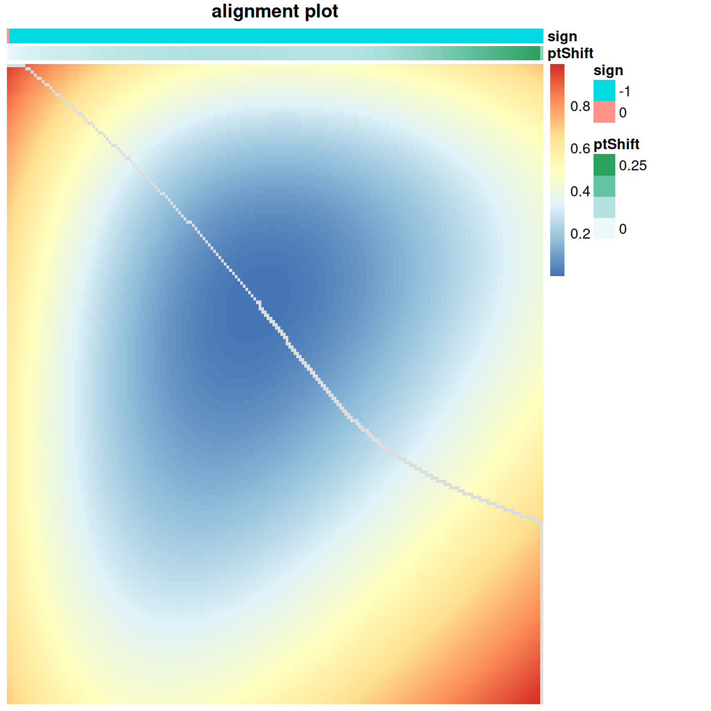
## [1] NAB <- calcDistMat(interGlobal_hcaBM1_scaled$scaledData[sharedMarkers,],
interGlobal_hcaBM2_scaled$scaledData[sharedMarkers,],
dist.method = 'Euclidean')
alignment = globalAlign(B)
plotAlign(alignment)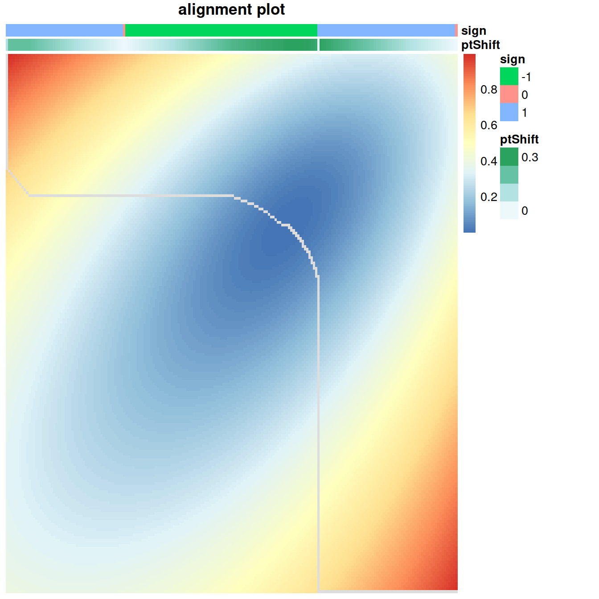
## [1] NA24.3 Ackowledgements
This notebook uses material from:
24.4 Session information
## R version 4.0.3 (2020-10-10)
## Platform: x86_64-pc-linux-gnu (64-bit)
## Running under: CentOS Linux 8
##
## Matrix products: default
## BLAS: /opt/R/R-4.0.3/lib64/R/lib/libRblas.so
## LAPACK: /opt/R/R-4.0.3/lib64/R/lib/libRlapack.so
##
## locale:
## [1] LC_CTYPE=en_GB.UTF-8 LC_NUMERIC=C
## [3] LC_TIME=en_GB.UTF-8 LC_COLLATE=en_GB.UTF-8
## [5] LC_MONETARY=en_GB.UTF-8 LC_MESSAGES=en_GB.UTF-8
## [7] LC_PAPER=en_GB.UTF-8 LC_NAME=C
## [9] LC_ADDRESS=C LC_TELEPHONE=C
## [11] LC_MEASUREMENT=en_GB.UTF-8 LC_IDENTIFICATION=C
##
## attached base packages:
## [1] splines parallel stats4 stats graphics grDevices utils
## [8] datasets methods base
##
## other attached packages:
## [1] celldex_1.0.0 Cairo_1.5-12.2
## [3] cellAlign_0.1.0 clusterProfiler_3.18.1
## [5] msigdbr_7.2.1 viridis_0.6.0
## [7] viridisLite_0.4.0 gam_1.20
## [9] foreach_1.5.1 destiny_3.4.0
## [11] SingleR_1.4.1 forcats_0.5.1
## [13] stringr_1.4.0 dplyr_1.0.5
## [15] purrr_0.3.4 readr_1.4.0
## [17] tidyr_1.1.3 tibble_3.1.1
## [19] tidyverse_1.3.1 pheatmap_1.0.12
## [21] cowplot_1.1.1 batchelor_1.6.3
## [23] scater_1.18.6 ggplot2_3.3.3
## [25] scran_1.18.7 SingleCellExperiment_1.12.0
## [27] SummarizedExperiment_1.20.0 Biobase_2.50.0
## [29] GenomicRanges_1.42.0 GenomeInfoDb_1.26.7
## [31] IRanges_2.24.1 S4Vectors_0.28.1
## [33] BiocGenerics_0.36.1 MatrixGenerics_1.2.1
## [35] matrixStats_0.58.0 knitr_1.32
##
## loaded via a namespace (and not attached):
## [1] rappdirs_0.3.3 ggthemes_4.2.4
## [3] bit64_4.0.5 irlba_2.3.3
## [5] DelayedArray_0.16.3 data.table_1.14.0
## [7] RCurl_1.98-1.3 generics_0.1.0
## [9] RSQLite_2.2.5 shadowtext_0.0.7
## [11] proxy_0.4-25 bit_4.0.4
## [13] enrichplot_1.11.2.994 httpuv_1.5.5
## [15] xml2_1.3.2 lubridate_1.7.10
## [17] assertthat_0.2.1 xfun_0.22
## [19] hms_1.0.0 jquerylib_0.1.3
## [21] promises_1.2.0.1 evaluate_0.14
## [23] DEoptimR_1.0-8 fansi_0.4.2
## [25] dbplyr_2.1.1 readxl_1.3.1
## [27] igraph_1.2.6 DBI_1.1.1
## [29] ellipsis_0.3.2 RSpectra_0.16-0
## [31] backports_1.2.1 bookdown_0.22
## [33] sparseMatrixStats_1.2.1 vctrs_0.3.7
## [35] TTR_0.24.2 abind_1.4-5
## [37] cachem_1.0.4 RcppEigen_0.3.3.9.1
## [39] withr_2.4.2 ggforce_0.3.3
## [41] robustbase_0.93-7 vcd_1.4-8
## [43] treeio_1.14.3 xts_0.12.1
## [45] DOSE_3.16.0 ExperimentHub_1.16.1
## [47] ape_5.4-1 lazyeval_0.2.2
## [49] laeken_0.5.1 crayon_1.4.1
## [51] labeling_0.4.2 edgeR_3.32.1
## [53] pkgconfig_2.0.3 tweenr_1.0.2
## [55] nlme_3.1-152 vipor_0.4.5
## [57] nnet_7.3-16 rlang_0.4.10
## [59] lifecycle_1.0.0 downloader_0.4
## [61] BiocFileCache_1.14.0 modelr_0.1.8
## [63] rsvd_1.0.5 AnnotationHub_2.22.1
## [65] cellranger_1.1.0 polyclip_1.10-0
## [67] RcppHNSW_0.3.0 lmtest_0.9-38
## [69] Matrix_1.3-2 aplot_0.0.6
## [71] carData_3.0-4 boot_1.3-28
## [73] zoo_1.8-9 reprex_2.0.0
## [75] beeswarm_0.3.1 knn.covertree_1.0
## [77] bitops_1.0-7 blob_1.2.1
## [79] DelayedMatrixStats_1.12.3 qvalue_2.22.0
## [81] beachmat_2.6.4 scales_1.1.1
## [83] memoise_2.0.0 magrittr_2.0.1
## [85] plyr_1.8.6 hexbin_1.28.2
## [87] zlibbioc_1.36.0 scatterpie_0.1.5
## [89] compiler_4.0.3 dqrng_0.3.0
## [91] RColorBrewer_1.1-2 pcaMethods_1.82.0
## [93] dtw_1.22-3 cli_2.4.0
## [95] XVector_0.30.0 patchwork_1.1.1
## [97] ps_1.6.0 mgcv_1.8-35
## [99] ggplot.multistats_1.0.0 MASS_7.3-54
## [101] tidyselect_1.1.1 stringi_1.5.3
## [103] highr_0.9 yaml_2.2.1
## [105] GOSemSim_2.16.1 BiocSingular_1.6.0
## [107] locfit_1.5-9.4 ggrepel_0.9.1
## [109] grid_4.0.3 sass_0.3.1
## [111] fastmatch_1.1-0 tools_4.0.3
## [113] rio_0.5.26 rstudioapi_0.13
## [115] bluster_1.0.0 foreign_0.8-81
## [117] gridExtra_2.3 smoother_1.1
## [119] Rtsne_0.15 scatterplot3d_0.3-41
## [121] farver_2.1.0 ggraph_2.0.5
## [123] digest_0.6.27 rvcheck_0.1.8
## [125] BiocManager_1.30.12 shiny_1.6.0
## [127] Rcpp_1.0.6 car_3.0-10
## [129] broom_0.7.6 scuttle_1.0.4
## [131] later_1.2.0 BiocVersion_3.12.0
## [133] RcppAnnoy_0.0.18 httr_1.4.2
## [135] AnnotationDbi_1.52.0 colorspace_2.0-0
## [137] rvest_1.0.0 fs_1.5.0
## [139] ranger_0.12.1 uwot_0.1.10
## [141] statmod_1.4.35 tidytree_0.3.3
## [143] graphlayouts_0.7.1 sp_1.4-5
## [145] xtable_1.8-4 jsonlite_1.7.2
## [147] ggtree_2.4.1 tidygraph_1.2.0
## [149] R6_2.5.0 mime_0.10
## [151] pillar_1.6.0 htmltools_0.5.1.1
## [153] glue_1.4.2 fastmap_1.1.0
## [155] VIM_6.1.0 BiocParallel_1.24.1
## [157] BiocNeighbors_1.8.2 interactiveDisplayBase_1.28.0
## [159] class_7.3-19 codetools_0.2-18
## [161] fgsea_1.16.0 utf8_1.2.1
## [163] lattice_0.20-44 bslib_0.2.4
## [165] ResidualMatrix_1.0.0 curl_4.3.1
## [167] ggbeeswarm_0.6.0 zip_2.1.1
## [169] GO.db_3.12.1 openxlsx_4.2.3
## [171] limma_3.46.0 rmarkdown_2.7
## [173] munsell_0.5.0 e1071_1.7-6
## [175] DO.db_2.9 GenomeInfoDbData_1.2.4
## [177] iterators_1.0.13 haven_2.4.1
## [179] reshape2_1.4.4 gtable_0.3.0